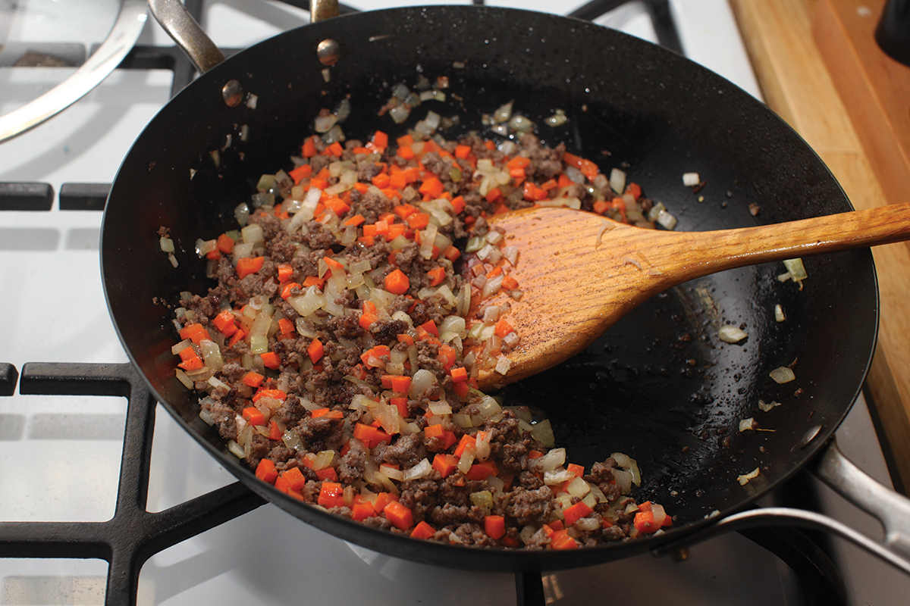
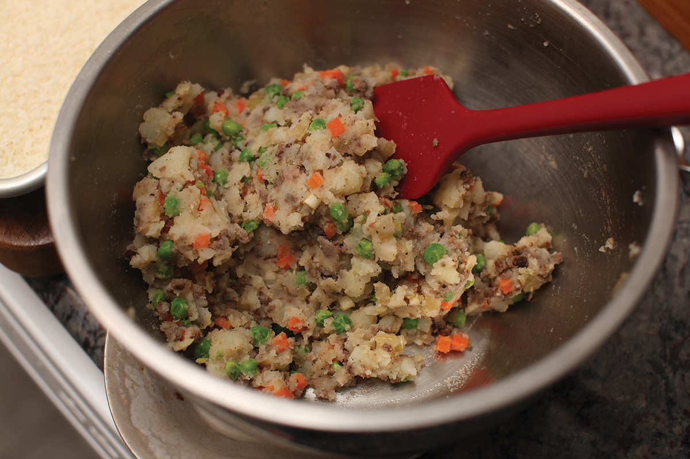
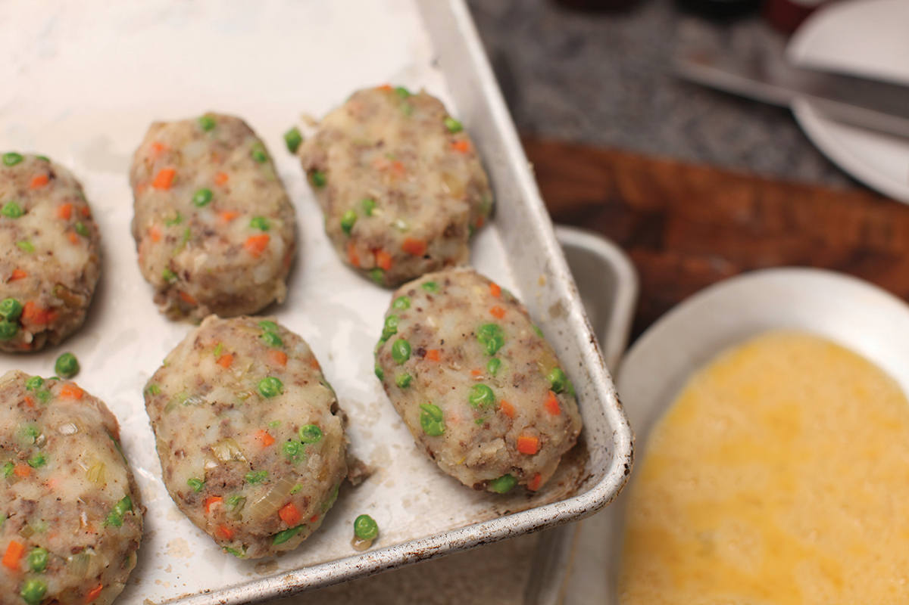
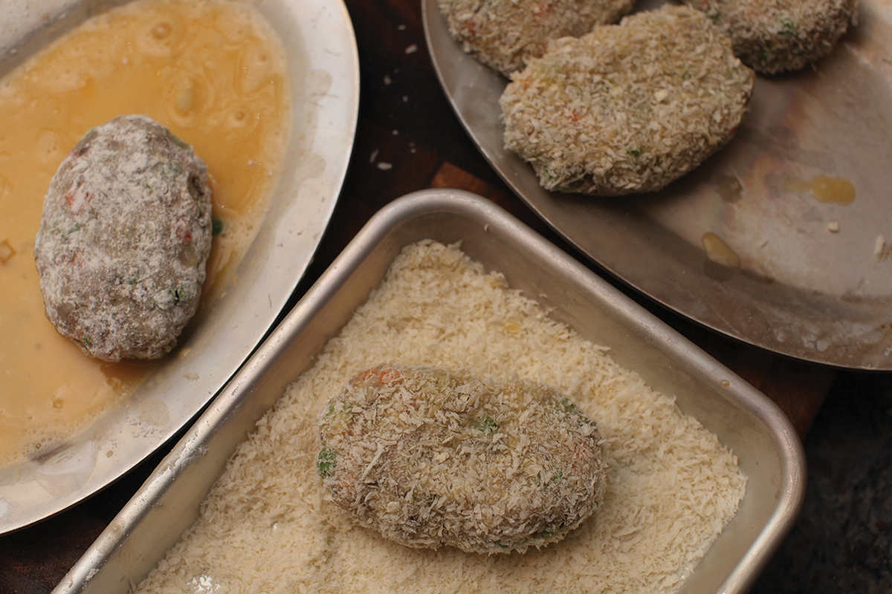
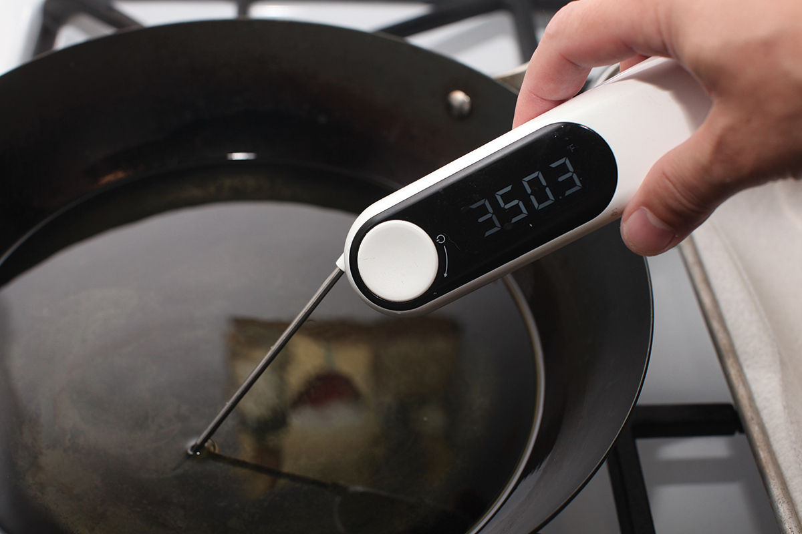
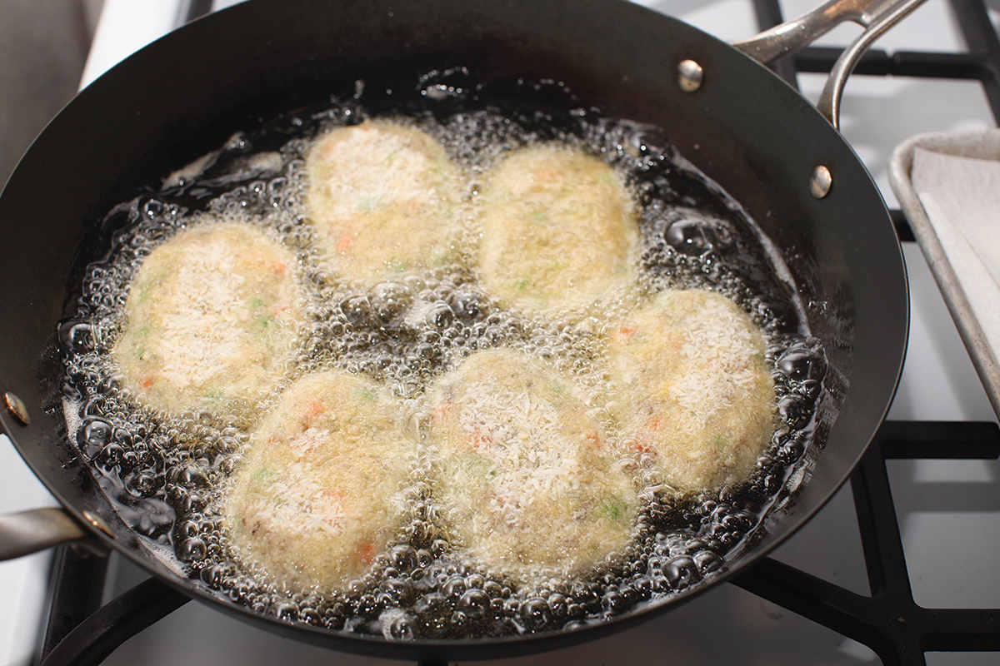
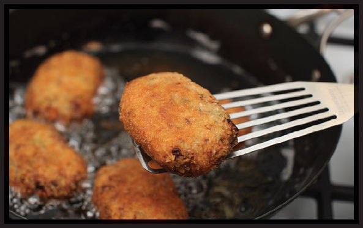

|
Yield Makes 12 to 16 |
Active Time 30 minutes Total Time 1 hour |
Breaded korokke can be frozen before frying. You can then fry them directly from the freezer (add 2 minutes to total frying time if frying from frozen). Feel free to omit any of the filling ingredients or to add whatever other ingredients you’d like. Common additions would be frozen vegetables such as peas, green beans, corn, or spinach (thawed and drained of excess liquid), grated cheese, canned tuna, pulled chicken meat, or sautéed minced mushrooms. If adding ingredients, just make sure they are cooked (frozen vegetables do not need to be cooked), dry, and that at least 50 percent of the mixture is composed of potato. If your mixture has trouble holding together, add instant mashed potatoes a tablespoon at a time to help bind.
INGREDIENTS
2 pounds (900 g) russet potatoes, peeled and cut into 2-inch chunks
Kosher salt
1 tablespoon (15 ml) peanut, rice bran, or other neutral oil
8 ounces (225 g) lean ground meat
1 small onion (about 4 ounces/120 g), minced
2 medium garlic cloves, minced (about 2 teaspoons/5 g)
1 small carrot (about 4 ounces/120 g), peeled and minced
2 tablespoons (30 g) unsalted butter, cut into a few thin pats
Freshly ground black pepper
For the Coating:
1 cup (about 5 ounces/140 g) all-purpose flour
3 large eggs, thoroughly beaten
1½ cups (about 5 ounces/140 g) Japanese-style panko bread crumbs
To Cook:
1 quart (1 l) peanut, rice bran, or other neutral oil
To Serve:
Tonkatsu sauce, homemade (here) or store-bought
DIRECTIONS
1 In a large saucepan, cover the potatoes with cold water seasoned with a big pinch of salt. Bring to a boil over high heat, reduce to a simmer, and cook just until the potatoes can be pierced easily with a knife or a skewer (10 to 15 minutes after coming to a boil). Drain well, return them to the saucepan, and allow to steam-dry until cool enough to handle.
2 Meanwhile, heat the oil in a wok over heat until shimmering. Add the meat and cook, breaking it up with a wok spatula or a potato masher, until it is no longer pink, about 2 minutes. Add the onion, garlic, and carrots and cook, stirring and tossing frequently, until the vegetables are softened and any exuded liquids have evaporated, about 5 minutes. Add the butter and remove from the heat.
3 Using a potato masher, roughly mash the potatoes until no chunks larger than ½ inch remain. Sprinkle generously with salt and pepper. Add the meat and vegetable mixture and fold everything together with a spatula to incorporate. Taste the mixture and season with salt or pepper to taste.
4 When cool enough to handle, pick up about 4 ounces (120 g) of the mixture and form it into a ¾- to 1-inch-thick oblong patty about the size and dimensions of a computer mouse. Transfer to a baking sheet or large plate. Continue forming patties until all the mixture is used up. Refrigerate patties until quite cool, 15 to 30 minutes, before continuing.
5 For the Coating: Fill 3 wide, shallow bowls or high-rimmed plates with flour, beaten eggs, and panko, respectively. Working with one patty at a time, dredge in flour with your first hand, shaking off the excess. Transfer to the egg dish, then turn the patty with your second hand to coat both sides. Lift and allow excess egg to drain off, then transfer the patty to the bread crumb mixture. With your first hand, scoop bread crumbs on top of the patty, then gently press, turning to ensure a good layer of crumbs on both sides. Return the patty to the tray or plate and repeat with the remaining patties. If this is done properly, your first hand should touch only dry ingredients, while your second hand should touch only wet, making the process less messy. Breaded patties can be stored in the refrigerator for several days or frozen and stored in the freezer for several months.
6 When Ready to Cook: Heat the oil in a wok over high heat until it registers 350°F (175°C) on an instant-read thermometer. Using tongs or your fingers, gently lower patties into hot fat, adding only as many as you can fit in a single layer (4 to 6 patties). Fry, adjusting the heat as necessary for a steady, vigorous bubble (around 300° to 325°F; 150° to 160°C), gently swirling the wok and turning the patties occasionally for even browning, until crisp and golden brown all over and hot in the center, about 4 minutes total (or 6 minutes if cooking from frozen).
7 Transfer cooked patties to a paper-towel-lined plate and season with salt. Serve korokke hot, at room temperature, or chilled, with tonkatsu sauce.







Kabocha Squash or Sweet Potato Korokke
Korokke can be made with squash or sweet potato in place of the mashed potatoes. For sweet potatoes, the same technique can be used, simply substituting sweet potato for the potato. For kabocha squash, split 2 pounds of squash (no need to remove the skin), scrape out the seeds, cut into large chunks, and cook them in a bamboo steamer or metal steamer insert until just tender (about 20 minutes), discard the stem, and use in place of boiled potatoes in the recipe.